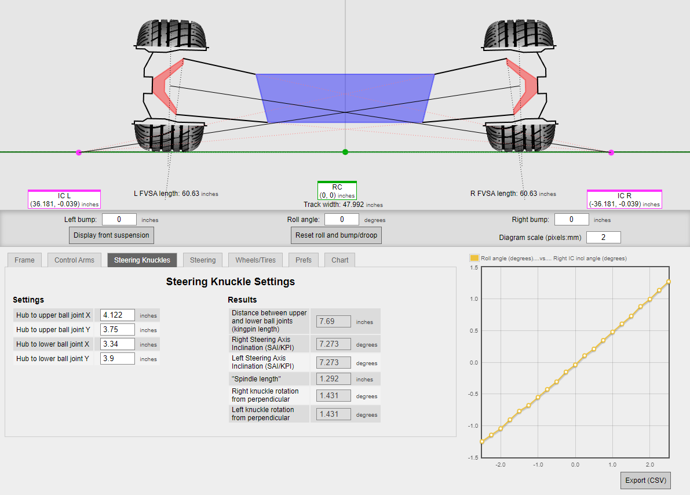
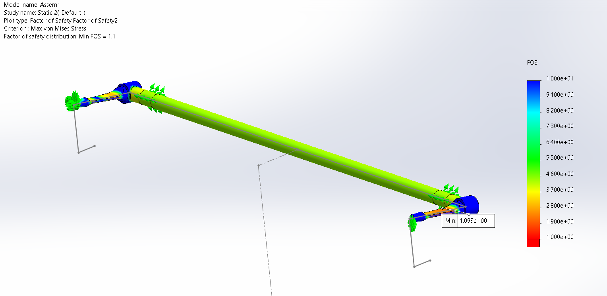

Design
Interactive model of the suspension system I worked on:
Project Overview
Before working directly on the suspension of our vehicle, I spent time learning about vehicle dynamics and engineering
mechanics. This educational period allowed me to learn about the system as a whole, along with the specific
applications of coursework to vehicle systems.
After this, I designed a continuously-adjustable (bladed) anti-roll bar and set hardpoints
based on target parameters.
On top of these areas, I designed control arms, pullrods, toe/tie rods, and bellcrank geometry (These can be seen
on the manufacuring page).
When defining suspension characteristics, I first defined the front and rear suspension geometry in two dimensions, using
a web-based simulation to determine the exact characteristics resulting from the selected geometry. An image of this quick,
2D analysis can be seen to the right. I then moved this information into our hardpoints sketch, which then transfers to our
dynamic reference model, allowing us to view the full range of motion of our vehicle.

The image on the right is our current dynamic reference sketch, referencing hardpoints. Note that there are no current displacements
set, but the entire sketch is equation-driven. You essentially input some form of vehicle displacement, and the rest of the sketch
updates to reflect the new condition.

This next section covers my anti-roll bar (ARB) design. The design I chose contains two primary components: the torsion bar
and blades. These parts interact in the following way: two blades attach to either end of the torsion bar, parallel to
each other and perpendicular to the torsion bar. When the vehicle rolls, bellcrank displacement applies a deflection to
the tip of the blades. However, the force applied by this deflection varies based on the stiffness of the ARB. The blade is
designed such that the second moment of area varies as much as possible when turned 90 degrees, and this adjustability in moment
of inertia via rotation allows for a continuously-adjustable design.
During design, we calculate an upper bound for the vehicle's roll, meaning that the force going into the ARB becomes a constant
deflection calculation considered at that upper bound. This allowed me to run FEA and determine exactly what loads I expect
the ARB to withstand. I've included an image of an earlier simulation to the right. Note that the side taking the applied force
won't reflect accurate factory of safety, as the constant deflection specified also puts it in tension. The other blade (the one
reacting forces) should reflect the proper expected loads.

The first image shown is the initial anti-roll bar assembly. In this photo, it is constrained with two shaft collars
for the purpose of tacking.

This next image is the full rear assembly (mechanical). This includes both suspension and unsprung, along with hardpoints
defined by the frame.